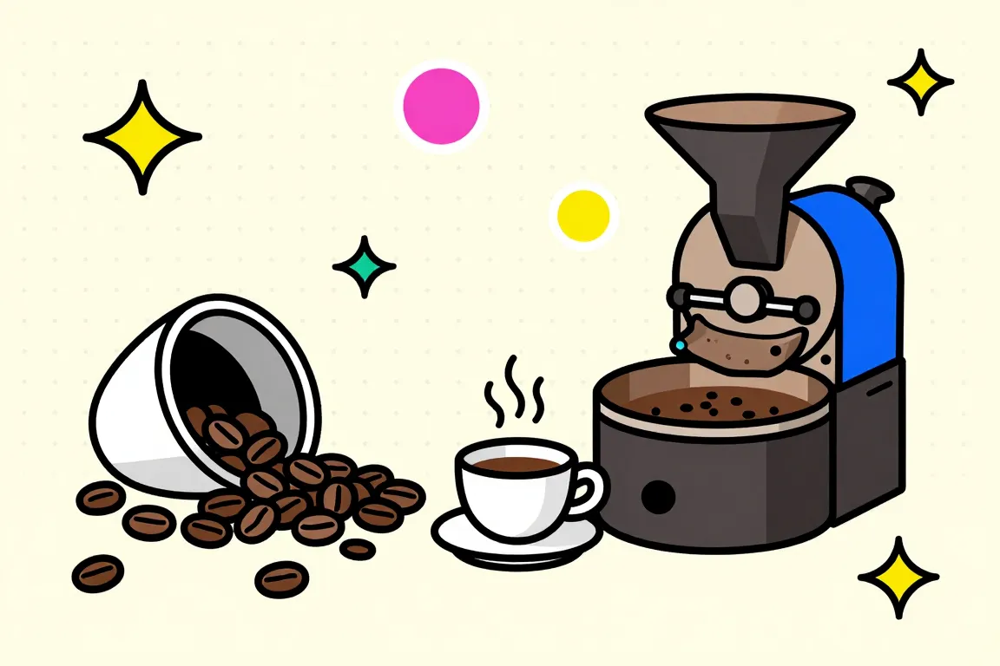

Плоские громкие цветовые поля с толстыми чёрными границами и жёсткими смещёнными тенями без размытия. Вырос из сайтов продуктов вроде Gumroad и наборов сообщества Figma как намеренный ответ корпоративной мягкости.

Главная идея
Интерфейс завоёвывает доверие, открыто показывая свою структуру и громко заявляя о ней: каждая граница и тень — заявленный факт.
Принципы дизайна
Рисуйте сплошную границу #000000 толщиной 2–4px вокруг каждой карточки, кнопки, поля ввода и изображения.
Бросайте одну жёсткую тень с нулевым размытием и смещением 4px 4px, например 4px 4px 0 0 #000000, на каждый приподнятый элемент.
Заливайте поверхности плоским насыщенным цветом при 100% непрозрачности и берите на странице от двух до четырёх громких оттенков.
При наведении сдвигайте элемент на смещение тени и сводите тень к 0, чтобы он будто вдавливался в страницу.
Используйте радиусы только 0–8px и одно и то же значение у всех элементов страницы.
Набирайте заголовки плотным гротеском или моноширинным шрифтом с насыщенностью 700 и выше, размером 48–96px.
Держите текст чёрным на цветных полях и достигайте контраста не ниже 7:1 на каждой заливке.
Антипаттерны
Размытые падающие тени с радиусом размытия больше 0px
Тонкие серые градиенты или глянцевые блики на поверхностях
Пастельные малонасыщенные заливки с серым текстом
Волосяные границы 1px или границы не чёрного цвета
Разные радиусы углов на одной странице, например 4px на карточках и 24px на кнопках